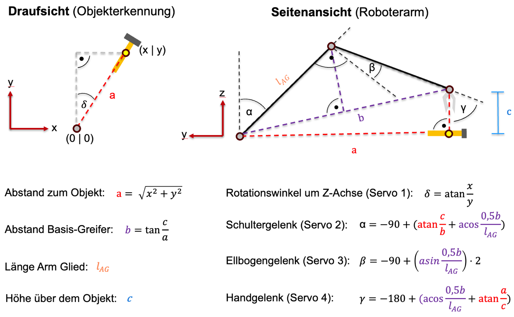

Voice-controlled cobot system
A team-built prototype for retrieving and putting away two tools through bounded spoken commands.
- Project period
- Apr 2024 – Mar 2025
- Context
- Service and Industry Robotics, TH Köln
- Status
- Functional feasibility prototype
- My contribution
- Team member in the integrated tool-handling project
In collaboration with: Lukas Sondenheimer ↗ Denis Tolkovets ↗ Timon Lübken ↗ Fabio Jain ↗
A demonstrated speech-to-tool workflow with separate subsystem tests and unresolved placement, speed and safety limitations.
Context and my role
I was part of the TH Köln team building a tool-handling feasibility prototype with a Lynxmotion SES-V2 four-axis arm and overhead Azure Kinect camera and microphones. We integrated speech, vision and arm services under a ROS 2 manager to retrieve or put away a hammer and screwdriver.
The physical tests used a lightweight wooden hammer substitute because an ordinary hammer was too heavy. The system-level decisions and results below are the team’s work.
Route each command through the services it needs
A button press recorded the command. Whisper transcribed it, and GPT-4o selected among four predefined tool tasks or no matching action. The language model selected a task rather than generating arbitrary joint motion. Status and error feedback used prerecorded audio.
Retrieving a tool used its predefined storage coordinates. Putting one away first required Vision to locate it in the exchange area. A YOLO11m-obb detector supplied image coordinates; centre-pixel depth supported conversion to a spatial target. Camera and arm were aligned in X to simplify that conversion.
Button-recorded command → Whisper transcription → GPT-4o selects a predefined task
Retrieve
Known storage coordinates → Arm service → Tool to exchange area → Rest position
Put away
Vision service → Requested tool’s image position + centre depth → Spatial target → Arm service → Storage → Rest position
No matching action or tool not found: prerecorded feedback, then return to speech input.
Correct the dataset before adding more images
The detector dataset contained 3,372 annotated hammer and screwdriver images assembled from public Roboflow datasets and manually corrected. Seven iterations were reported. Adding datasets in the first five did not improve the metric; removing incorrect annotations and correcting labels produced the largest improvement.
The report quotes 81.4% mAP but leaves the IoU aggregation and evaluation split unclear. That detector metric does not describe physical task success.
Supply geometric joint targets to MoveIt
Initial pose planning struggled with the arm’s missing independent gripper rotation. We calculated the base angle towards the target and the remaining joint angles in the corresponding vertical plane using arm geometry. MoveIt continued planning trajectories between these joint targets.
The approach enabled the tested movements but constrained gripper orientation. Several intermediate positions made the overall movement sequence roughly 40 seconds, depending on the movement, with about six seconds per partial sequence through the existing pipeline.

Results and limitations
The prototype demonstrated the workflow under controlled conditions. Its separate subsystem evaluations had different inputs and should not be combined into an end-to-end success percentage.
Controlled tests with a screwdriver and lightweight wooden hammer substitute.
- Speech
- 10/10 and 7/10 commands correct
- Two prerecorded voices; ten commands each.
- Localisation
- Maximum reported deviation: 5 mm
- Twenty placements per object; constant lighting and background.
- Grasping
- 20/20 successful grasps per object
- Exact coordinates supplied to the arm.
- Placement
- Hammer placement failed with obstruction
- Ten trials per object and condition; the stored screwdriver caused a collision.
Screwdriver placement succeeded in the reported tests, and hammer placement worked when storage was unobstructed. With the screwdriver already stored, the hammer collided with it and placement failed.
Obstacle handling and proposed safety measures, including person detection, monitored stopping and an emergency-stop provision, remained unimplemented. Restricted gripper orientation, slow execution and limited test diversity prevented practical assistance in this version.
Existing ROS 2 service diagrams
The manager routes requests among Speech, Vision and Arm. The diagrams below are existing implementation resources; the two-path summary above is the main workflow explanation.